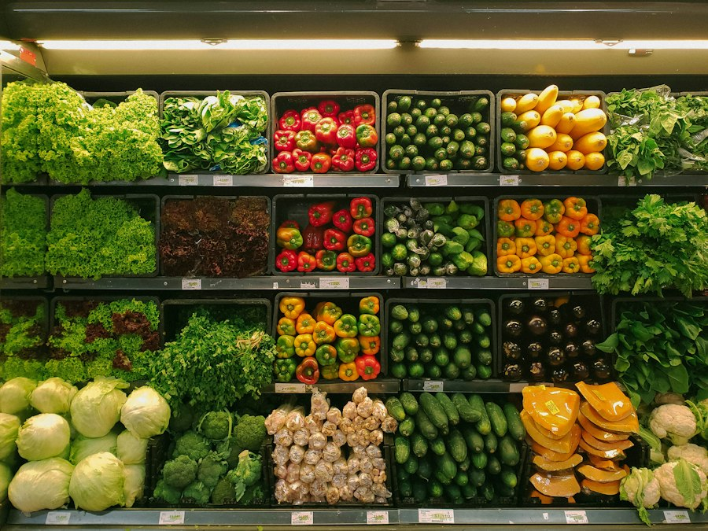

你不知道的德国 · 32
🛒 德国超市
为什么这么便宜
Aldi-Prinzip · 自有品牌 · 全欧洲最低价之一
🏷️ 只卖「够用的东西」
走进德国折扣店（Discounter）——Aldi、Lidl、Penny、Netto——你会发现一件事：选择少得可怜。
普通超市动辄上万种商品，而 Aldi 早年只有约 300 种。品类少意味着：每一样都能大批量采购、快速周转、压低进价。
🧠 这背后是阿尔布雷希特兄弟（Albrecht）的经营哲学：把「选择」本身当成成本。少一个品类，就少一份库存、少一份滞销、少一份管理。
🇩🇪 Auf Deutsch
Bei Aldi gab es früher nur etwa 300 Artikel. Weniger Auswahl bedeutet: größere Mengen, schnellere Drehung, niedrigere Preise.
📦 九成是自有品牌
德国折扣店里，自有品牌（Eigenmarke）占比常超过 90%，你几乎找不到可口可乐之外的知名品牌。
自有品牌没有广告费、没有品牌溢价、包装朴素，价格可以压得很低——但质量往往由同一批工厂生产，只是换了个标签。
🥛 在德国，「Milch」就是 Milch。 Aldi 的牛奶没有名字，只有价格牌——德国消费者早就习惯了这种「去品牌化」，甚至觉得大牌多花的钱是浪费。
🇩🇪 Auf Deutsch
Der Anteil der Eigenmarken ist in deutschen Discountern sehr hoch – oft über 90 Prozent. Ohne Werbung und Markenimage ist der Preis deutlich niedriger.
🧾 省在你看不见的地方
德国超市的「省」处处可见：货架直接用纸箱摆（不拆箱上架）、灯光朴素、装修基本不存在、购物袋要另外付钱。
购物车要投押金（Pfand，通常 50 分或 1 欧），用完自己还回去——省掉了雇人收车的人力。收银员扫货速度快到让外国人吃惊。
🛒 折扣店里连商品摆放都省：货架就是拆开的纸箱，商品躺着等你拿。有人觉得简陋，德国人觉得「正好」——省下的每一分钱都写在价格牌上。
🇩🇪 Auf Deutsch
Gespart wird überall: Kartons statt Regale, keine Dekoration, Pfand auf Einkaufswagen. Die Kassen sind extrem schnell.
💰 价格战打出来的低价
Aldi、Lidl、Penny、Netto 几家折扣店长期互相压价，形成了著名的「折扣店大战」。德国食品零售集中度很高，前四家占了大部分市场。
结果是：德国的食品价格在欧洲属于最低的一档，明显低于法国、荷兰，更不用说北欧。
📉 德国有个词叫 Geiz ist geil（抠门才爽）——这是 2000 年代电器连锁 Saturn 的广告语，引发全国大讨论：把「省钱」当美德，到底是精明还是短视？
🇩🇪 Auf Deutsch
Aldi, Lidl, Penny und Netto liefern sich einen harten Preiskampf. Deshalb gehören die Lebensmittelpreise in Deutschland zu den niedrigsten in Europa.
⚖️ 便宜的代价
低价不是免费的。折扣店的收银员每分钟要扫几十件商品，工作强度高、节奏快；货架常年缺人，是德国零售业的老问题。
另一头是供应商：大买家手握议价权，农产品价格被压到极低，农民常常抗议。所以「德国超市便宜」这件事，本地人也有不同看法。
🚜 德国农民曾在超市门口倒牛奶抗议收购价太低。消费者省钱，生产者承压——低价链条上总是有人买单，德国人对此并不陌生。
🇩🇪 Auf Deutsch
Die niedrigen Preise haben eine Kehrseite: hoher Arbeitsdruck an den Kassen und starker Preisdruck auf die Landwirte.
🇩🇪 为什么德国人特别在意价格
德国消费者对价格极度敏感，比价是国民习惯。超市每周寄来的促销单（Prospekt）会被认真研究，特价商品（Angebot）常常开门就被扫空。
这背后有历史：战后「经济奇迹」时期形成的节俭文化、以及一种朴素的公平观——同样的东西，不该有人多付钱。
🧺 德国人常说 «Preis-Leistungs-Verhältnis»（性价比），这个词在德国被使用得极其频繁。便宜不等于低质，关键在「值不值」——这才是德国式消费观。
🇩🇪 Auf Deutsch
Deutsche Verbraucher sind extrem preisbewusst. Das Wort Preis-Leistungs-Verhältnis ist ein zentraler Begriff der deutschen Konsumkultur.
📖 想读更多德国冷知识？
32 期「你不知道的德国」深度专栏，都在 Leon 德语学习中心。
📚 进入网站